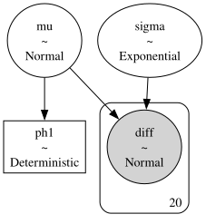

import arviz as az
import numpy as np
import pymc as pm
from scipy import stats
rng = np.random.default_rng(6420)
7. Hypothesis Testing*#
Psoriasis: Two-sample problem with paired data#
This is our first example of hypothesis testing.
Adapted from Unit 6: psoriasis.odc.
Woo and McKenna (2003) investigated the effect of broadband ultraviolet B (UVB) therapy and topical calcipotriol cream used together on areas of psoriasis. One of the outcome variables is the Psoriasis Area and Severity Index (PASI), where a lower score is better.
The PASI scores for 20 subjects are measured at baseline and after 8 treatments. Do these data provide sufficient evidence to indicate that the combination therapy reduces PASI scores?
The Classical Approach:#
Two measurements from each participant (before and after treatment) were collected. We want to know if the mean of the differences between paired observations is significantly different from zero. In the classical approach:
Since we are interested whether treatment reduces scores, the null and alternative hypotheses are:
The statistics we need for this hypothesis test are the mean difference \(\bar{d}\) , standard deviation for the differences \(s_{d}\), and the test statistic:
Recalling that the \(t\) statistic is \(t\)-distributed with \(n-1\) (19) degrees of freedom:
# fmt: off
baseline= np.array([ 5.9, 7.6, 12.8, 16.5, 6.1,
14.4, 6.6, 5.4, 9.6, 11.6,
11.1, 15.6, 9.6, 15.2, 21.0,
5.9, 10.0, 12.2, 20.2, 6.2])
after= np.array([ 5.2, 12.2, 4.6, 4.0, 0.4,
3.8, 1.2, 3.1, 3.5, 4.9,
11.1, 8.4, 5.8, 5.0, 6.4,
0.0, 2.7, 5.1, 4.8, 4.2])
# fmt: on
# Classical Hypothesis Test:
##################################################
diffs = baseline - after
n = len(diffs)
dbar = np.mean(diffs)
stdev = np.std(diffs, ddof=1)
tstat = dbar / (stdev / np.sqrt(n))
# One sided test!
pval = stats.t.sf(tstat, df=n - 1)
print(f"dbar = {dbar:.4f}")
print(f"stdev = {stdev:.4f}")
print(f"tstat = {tstat:.4f}")
print(f"pval = {pval:.8f}")
alpha = 0.05
df = n - 1
tcrit = stats.t.ppf(1 - alpha / 2, df=df)
ci_lower = dbar - tcrit * stdev / np.sqrt(n)
ci_upper = dbar + tcrit * stdev / np.sqrt(n)
print(f"95% CI = [{ci_lower:.4f}, {ci_upper:.4f}]")
dbar = 6.3550
stdev = 4.9309
tstat = 5.7637
pval = 0.00000744
95% CI = [4.0472, 8.6628]
At significance level \(\alpha = 0.05\), we reject the null hypothesis and conclude that there is strong evidence that treatments reduced PASI scores. The model in the hypothesis test is \(d_{i}\overset{\text{iid}}{\sim}\mathcal{N}(\mu_{d} , \sigma_{d}^{2})\).
The Bayesian Approach:#
A Bayesian version of our hypothesis test involves placing priors on the distribution of the differences:
Note
A quick word on very wide, “non-informative” priors. The professor often uses these extremely wide normal priors or, for precision, wide gamma priors. Typically, the PyMC and Stan creators recommend using what they call weakly informative priors, instead (see this link). For the most part, we’ve left Brani’s original priors in here unless they make a large difference to sampling.
We specify these components as normal, but we also include ph1. Note how the vectorized implementation using pm.math.switch is equivalent to an indicator function:
After sampling \(\texttt{ns}\) times, the postrior mean for ph1 can be used as an empirical estimate for \(P(\mu_{d} > 0)\):
with pm.Model() as m:
# priors
mu = pm.Normal("mu", mu=0, sigma=316)
# prec = pm.Gamma("prec", alpha=0.001, beta=0.001) # From the lecture version
# sigma = pm.Deterministic("sigma", 1 / pm.math.sqrt(prec))
sigma = pm.Exponential("sigma", 0.05)
ph1 = pm.Deterministic("ph1", pm.math.switch(mu >= 0, 1, 0))
pm.Normal("diff", mu=mu, sigma=sigma, observed=baseline - after)
trace = pm.sample(5000, random_seed=rng)
pm.model_to_graphviz(m)

az.summary(trace, ci_prob=0.95)
/Users/aaron/miniforge3/envs/pymc_f26/lib/python3.14/site-packages/arviz_stats/base/diagnostics.py:90: RuntimeWarning: invalid value encountered in scalar divide
(between_chain_variance / within_chain_variance + num_samples - 1) / (num_samples)
/Users/aaron/miniforge3/envs/pymc_f26/lib/python3.14/site-packages/arviz_stats/base/diagnostics.py:313: RuntimeWarning: invalid value encountered in scalar divide
varsd = varvar / evar / 4
| mean | sd | eti95_lb | eti95_ub | ess_bulk | ess_tail | r_hat | mcse_mean | mcse_sd | |
|---|---|---|---|---|---|---|---|---|---|
| mu | 6.34 | 1.19 | 4 | 8.7 | 15558 | 12749 | 1.00 | 0.0096 | 0.0074 |
| sigma | 5.25 | 0.93 | 3.8 | 7.4 | 15619 | 13357 | 1.00 | 0.0078 | 0.0077 |
| ph1 | 1 | 0 | 1 | 1 | 20000 | 20000 | nan | 0 | nan |
This test also gives us evidence that treatments reduced PASI scores. The two tests, however, answered very different questions. Let’s briefly return to the first half of the course.
In the Bayesian approach, we are directly estimating the posterior probability that the treatment effect is positive, given the observed data in the real world. Classical \(p\)-values are prone to such misinterpretation. A \(p\)-value in a classical test only helps us in answering:
“If the treatment truly had no effect, how likely is it that we would observe data this extreme?”
It only tells us how surprising our data would be in a world that is hypothetical: one where there is “certainly no treatment effect”. In contrast, the Bayesian framework provides a probabilistic belief about the treatment’s ability to reduce PASI scores in the same world where the data were collected.
Equivalence of generic and brand-name drugs#
Adapted from Unit 6: equivalence.odc.
The manufacturer wishes to demonstrate that their generic drug for a particular metabolic disorder is equivalent to a brand name drug. One of indication of the disorder is an abnormally low concentration of levocarnitine, an amino acid derivative, in the plasma. The treatment with the brand name drug substantially increases this concentration.
A small clinical trial is conducted with 43 patients, 18 in the Brand Name Drug arm and 25 in the Generic Drug arm. The increases in the log-concentration of levocarnitine are in the data below.
The FDA declares that bioequivalence among the two drugs can be established if the difference in response to the two drugs is within 2 units of log-concentration. Assuming that the log-concentration measurements follow normal distributions with equal population variance, can these two drugs be declared bioequivalent within a tolerance +/-2 units?
The way the data is set up in the .odc file is strange. It seems simpler to just have a separate list for each increase type.
# fmt: off
increase_type1 = [7, 8, 4, 6, 10, 10, 5, 7, 9, 8, 6, 7, 8, 4, 6, 10, 8, 9]
increase_type2 = [6, 7, 5, 9, 5, 5, 3, 7, 5, 10, 8, 5, 8, 4, 4, 8, 6, 11,
7, 5, 5, 5, 7, 4, 6]
# fmt: on
We’re using pm.math.switch to recreate the BUGS step() function for the probint variable.
with pm.Model() as m:
# priors
mu1 = pm.Normal("mu1", mu=10, sigma=316)
mu2 = pm.Normal("mu2", mu=10, sigma=316)
mudiff = pm.Deterministic("mudiff", mu1 - mu2)
prec = pm.Gamma("prec", alpha=0.001, beta=0.001)
sigma = 1 / pm.math.sqrt(
prec
) # lecture example. could also put prior on sigma directly
probint = pm.Deterministic(
"probint",
pm.math.switch(pm.math.abs(mudiff) <= 2, 1, 0),
)
pm.Normal("y_type1", mu=mu1, sigma=sigma, observed=increase_type1)
pm.Normal("y_type2", mu=mu2, sigma=sigma, observed=increase_type2)
trace = pm.sample(5000, random_seed=rng)
az.summary(trace, ci_prob=0.95)
| mean | sd | eti95_lb | eti95_ub | ess_bulk | ess_tail | r_hat | mcse_mean | mcse_sd | |
|---|---|---|---|---|---|---|---|---|---|
| mu1 | 7.332 | 0.475 | 6.4 | 8.3 | 26072 | 15021 | 1.00 | 0.0029 | 0.0022 |
| mu2 | 6.198 | 0.396 | 5.4 | 7 | 26393 | 16441 | 1.00 | 0.0024 | 0.0018 |
| prec | 0.2629 | 0.058 | 0.16 | 0.39 | 22269 | 14574 | 1.00 | 0.00039 | 0.0003 |
| mudiff | 1.134 | 0.62 | -0.1 | 2.4 | 26559 | 15844 | 1.00 | 0.0038 | 0.0028 |
| probint | 0.917 | 0.275 | 0 | 1 | 15276 | 20000 | 1.00 | 0.0022 | 0.0034 |
BUGS results:
mean |
sd |
MC_error |
val2.5pc |
median |
val97.5pc |
start |
sample |
|
|---|---|---|---|---|---|---|---|---|
mu[1] |
7.332 |
0.473 |
0.001469 |
6.399 |
7.332 |
8.264 |
1001 |
100000 |
mu[2] |
6.198 |
0.4006 |
0.001213 |
5.406 |
6.199 |
6.985 |
1001 |
100000 |
mudiff |
1.133 |
0.618 |
0.00196 |
-0.07884 |
1.134 |
2.354 |
1001 |
100000 |
prec |
0.2626 |
0.05792 |
1.90E-04 |
0.1617 |
0.2584 |
0.3877 |
1001 |
100000 |
probint |
0.9209 |
0.2699 |
9.07E-04 |
0 |
1 |
1 |
1001 |
100000 |
%load_ext watermark
%watermark -n -u -v -iv -p pytensor
Last updated: Sun, 18 Oct 2026
Python implementation: CPython
Python version : 3.14.7
IPython version : 9.16.1
pytensor: 3.3.0
arviz: 1.3.0
numpy: 2.4.6
pymc : 6.3.1
scipy: 1.18.0